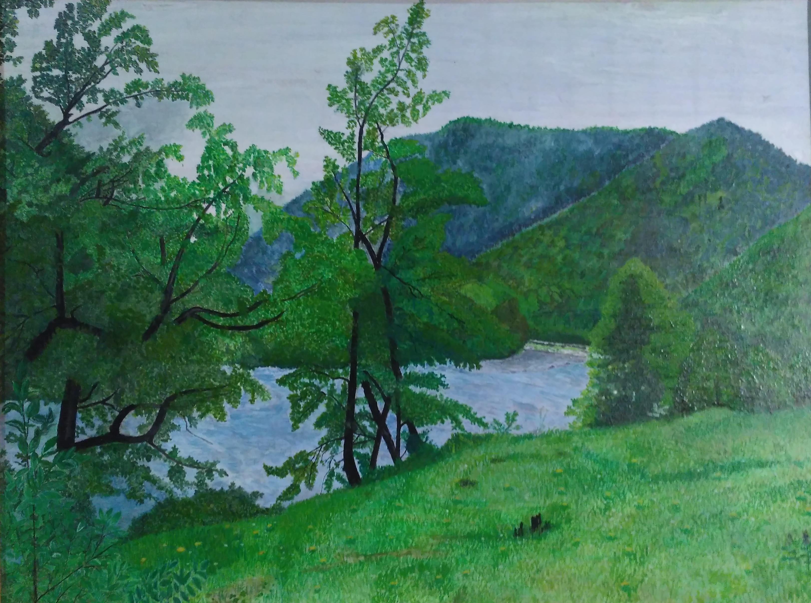

Рожкао
Рассыпался цвет по альпийским лугам И лето касается сосен. Опять мы встречаемся вместе в горах, И вновь ветер песню уносит. И слушают песню Лаба и Рожок, И стройные вечные ели. А парень поёт до чего хорошо! И мы у костра вновь присели. Пусть лето пройдёт, и опять листопад Над горной тропой закружится, И новых гостей встретит БАО " Комбат" И радостью будет делиться. Костёр разведут- пусть пылает в ночи Своим обжигающим жаром. Пусть песня опять над Рожкао звучит, Пусть парень поёт под гитару. Над горными склонами песня летит И нежно плывёт над Рожкао С.Хачко(Гайдай)